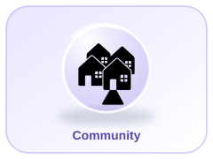
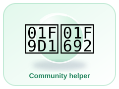
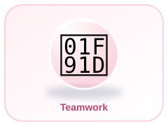

🏘️
Community
A community is a group of people connected by the place where they live, learn or work. People can help one another.
Understand people, places and how communities work
🏠 Back to Home🌐 Unified Hub


A community is a group of people connected by the place where they live, learn or work. People can help one another.
Doctors care for health, teachers help people learn, farmers grow food and firefighters respond to fires.
People deserve respect and safety. We can help by following fair rules, listening and caring for shared spaces.
People may celebrate different holidays, speak different languages and enjoy different foods. We can be curious and respectful.
Saving water, reducing waste and caring for plants and animals can help keep our communities healthy.
Maps help us understand where places are. A map key explains the symbols used on a map.
Question 1 of 5
Score: 0 / 5
What is one helpful thing you can do for your community this week? You could help tidy a shared space, welcome someone new or thank a community helper.